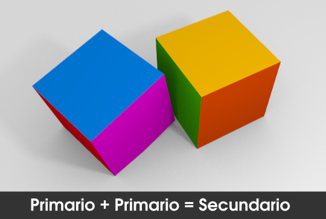

Actividades
1. Experimenta con colores en las luces
Añade varias luces a una escena y dales colores distintos. Observa hasta qué punto se mezclan esos colores, en el caso de que lo hagan.
2- Escena con muchas luces
Crea una escena en la que intervengan un buen número de lámparas, pero asegúrate de que sólo una produce sombras arrojadas.
3- Gana destreza con las mallas multi-materales
Crea un dado de colores usando un único cubo (Añadir/Malla/Cubo).
4. Imita horas del día
Con una lámpara Sol  trata de conseguir una escena iluminada al mediodía y al atardecer. Determinar la importancia que toman las sombras en cada una.
trata de conseguir una escena iluminada al mediodía y al atardecer. Determinar la importancia que toman las sombras en cada una.
5.- Cambia "Oclusión ambiental" por tres luces
Recupera viejos archivos en los que hiciste Iluminación básica y cámbiala por una de tres luces.
6- Juega con las maderas
Altera parámetros de los que has estudiado y cambia la apariencia de la madera de pino por una caoba, por ejemplo.
7- Bájate materiales de internet
Bájate algunos materiales interesantes de los lugares recomendados y aplícaselos a Suzanne o la geometría adecuada para ver sus resultados. Hazte con un buen repertorio en tu disco duro, no tanto para usarlos tal cual sino para estudiarlos y modificarlos de acuerdo a tus necesidades